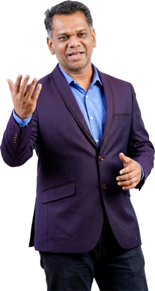
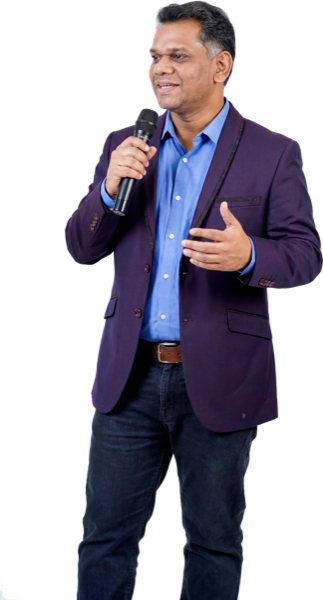
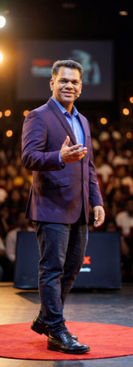
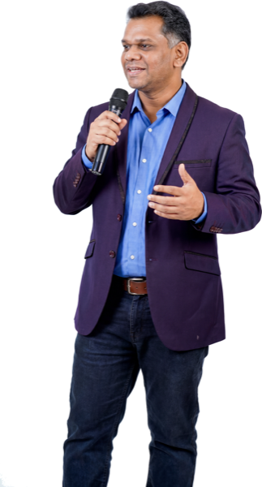

Home / Speaking / Bio & intro kit
Everything you need to introduce me.
Written for event organisers, compères and faculty coordinators. Copy what you need — a spoken intro for the stage, a bio for the programme booklet, headshots for your posters. Nothing here needs my approval first; it is all pre-approved for publicity.
Read this from the stage.
About twenty seconds. Written to be spoken aloud, not read silently.
Spoken introduction
“Our speaker today is Shankar J, a PhD scholar at NIT Calicut, where he researches brain–computer interfaces: teaching machines to read EEG signals from the brain. He has delivered four hundred and eighty-one expert sessions to more than sixteen thousand five hundred learners, he is a four-time IEEE-recognised volunteer leader, and he was quoted in Forbes in 2024 as an expert on AI and productivity. Please join me in welcoming Shankar J.”
Numbers are spelled out because they are easier to read aloud. The copy button gives you the same text.
Bios, four lengths.
Pick the one that fits your slot. All are current and pre-approved.
One line
For a slide or a programme lineShankar J — PhD Scholar in EEG and brain–computer interfaces at NIT Calicut, and keynote speaker on AI/ML in signal processing.
Short bio
~25 wordsShankar J is a PhD scholar at NIT Calicut researching EEG and brain–computer interfaces. He speaks on AI/ML in signal processing, with 481 sessions delivered.
Medium bio
~50 wordsShankar J is a PhD scholar in Electronics and Communication Engineering at NIT Calicut, researching EEG deep learning and brain–computer interfaces. A keynote, FDP and workshop speaker on AI/ML in signal processing, he has delivered 481 expert sessions to over 16,800 learners and is a four-time IEEE-recognised volunteer leader.
Long bio
~110 wordsShankar J is a PhD scholar in Electronics and Communication Engineering at the National Institute of Technology Calicut, where his research focuses on EEG deep learning and motor imagery classification for clinically viable brain–computer interfaces. A former Assistant Professor with over ten years of teaching, he has delivered 481 expert sessions to more than 16,800 learners as a keynote speaker, faculty development programme resource person and workshop trainer on AI/ML in signal processing. He is a four-time IEEE-recognised volunteer leader and a Springer Best Paper Award recipient, and serves as a Mentor of Change with the Atal Innovation Mission, NITI Aayog. He was quoted in Forbes in April 2024 and featured in The Times of India in August 2024.
Four things organisers usually get wrong.
Not pedantry — these are accuracy issues, and two of them are credentials I do not hold. Getting them right protects both of us.
-
Please don’t call me “Dr”.
My doctorate is in progress, not awarded. The correct title is PhD Scholar or PhD researcher — not Dr Shankar J. My social handles readdrshankarj, which trips people up constantly; the handle predates the PhD and isn’t a claim to one. -
Forbes: “quoted in”, not “featured in”.
I was quoted in Forbes (April 2024) as an expert in an article on AI and productivity. It was not a profile of me, so “featured in Forbes” or “profiled by Forbes” overstates it. The Times of India piece was a feature: “Featured in The Times of India (Aug 2024)” is correct. -
My name on posters.
Shankar J is the preferred form. Shankar Jayaraj is my full name and is equally correct. Both are fine; please don’t mix them within one poster. -
My research record is focused, not extensive.
I have one peer-reviewed BCI paper to date, plus a Springer Best Paper Award from 2013 in a different field. Please avoid “extensively published” or “author of numerous papers”. “Emerging BCI researcher” is accurate and I am happy with it.
Quick facts.
| Name | Shankar J (full name: Shankar Jayaraj) |
|---|---|
| Title | PhD Scholar — not “Dr” |
| Affiliation | Electronics & Communication Engineering, National Institute of Technology Calicut |
| Field | Biomedical signal processing, EEG, brain–computer interfaces |
| Speaks on | AI/ML in signal processing and EEG · brain–computer interfaces · applied ML for biomedical data · AI-assisted research workflows · LinkedIn for technical professionals & students |
| Formats | Keynotes (45–60 min) · invited talks · FDPs (half-day to multi-day) · hands-on workshops · masterclasses (60–90 min) |
| Delivers | In person across India · online worldwide |
| Language | English |
| Track record | 481 expert sessions · 16,800+ learners · 10+ years teaching ECE |
| Recognition | 4× IEEE-recognised volunteer leader · Springer Best Paper Award (ICMT 2013) · Mentor of Change, Atal Innovation Mission, NITI Aayog |
| Press | Quoted in Forbes (Apr 2024) · Featured in The Times of India (Aug 2024) |
| Amateur radio | Callsign VU3FIY |
| Research IDs | ORCID · Google Scholar · IEEE Xplore |
Headshots & poster media.
Right-click and save, or use the download link on each. No permission needed for event publicity. Designers: the transparent cut-outs are the ones you want, drop them straight onto your background.










Credit as “Shankar J”. Please write the name exactly that way on posters, and don’t add “Dr”. Additional assets live in the full media folder.
Talk titles for your programme.
Exact titles, copy-pasteable. Full descriptions and audience fit are on the speaking page.
All four signature talks
- Reading the Brain: AI/ML in EEG Signal Processing
45–60 min keynote - From Signals to Systems: Applied Machine Learning for Biomedical Data
60–90 min talk or half-day workshop - Research, Accelerated: AI Tools for Scholars & Faculty
half-day to 2-day FDP - Invisible to Influential: LinkedIn for Technical Professionals & Students
60–90 min masterclass
Tag me in your event posts.
I reshare event posts, which puts your programme in front of my audience too.
Handles
LinkedIn linkedin.com/in/drshankarj · Instagram @drshankarj · YouTube @drshankarj · Website shankar-jayaraj.github.io
Still need to lock the date?
Send your event date, audience and topic. It comes straight to my phone and I reply within 24 hours.
Check availability